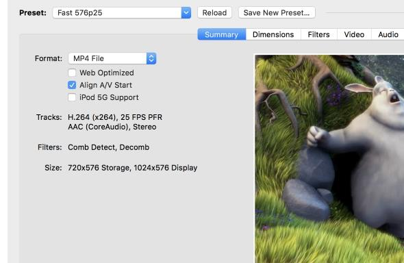

Convert video from nearly any format
Free and Open Source video converter
Multi-Platform desktop application
Just a few reason you will love HandBrake

Optimised for easy use
Built-in Device Presets
Get started with HandBrake in seconds by choosing a profile optimised for your device, or choose a universal profile for standard or high quality conversions. Simple, easy, fast. For those that want more choice, tweak many basic and advanced options to improve your encodes.
Modern video formats
Supported Input Sources
Handbrake can process most common multimedia files and any DVD or BluRay sources that do not contain any kind of copy protection.
Outputs
- File Containers: .MP4(.M4V) and .MKV
- Video Encoders: H.265 (x265 and QuickSync), H.264(x264 and QuickSync), H.265 MPEG-4 and MPEG-2, VP8, VP9 and Theora
- Audio Encoders: AAC / HE-AAC, MP3, Flac, AC3, or Vorbis
- Audio Pass-thru: AC-3, E-AC3, DTS, DTS-HD, TrueHD, AAC and MP3 tracks


With you in mind
Even more features for you
Title / chapter and range selection
Batch Scan and Queueing of encodes
Live Static and Video Preview
Support for VFR and CFR
Chapter Markers
Subtitles (VobSub, Closed Captions CEA-608, SSA, SRT)
Constant Quality or Average Bitrate Video Encoding
Video Filters: Deinterlacing, Decomb, Denoise, Detelecine, Deblock, Grayscale, Cropping and scaling